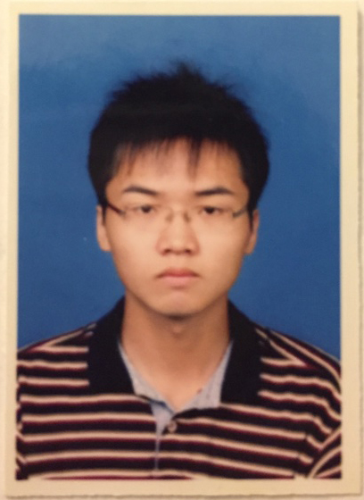

|

|
Jincheng Mei, Ph.D.
Research Scientist
Google DeepMind, Canada
jcmei514 AT gmail.com (personal email)
jcmei AT google.com (for Google related work)
|
Bio
I am a research scientist at Google DeepMind Canada (previously at Google Brain until April 20, 2023), doing research in the area of machine learning, reinforcement learning, and optimization.
I obtained my Ph.D. degree (09/2015-09/2021) from the University of Alberta,
under the supervision of Dale Schuurmans.
I have interned at Google Brain (08/2019-08/2021) and Borealis AI (09/2018-01/2019 and 03/2019-05/2019).
Education
-
Sep. 2021: Ph.D. (in Statistical Machine Learning program), Department of Computing Science, University of Alberta.
Supervisor: Dale Schuurmans.
-
Mar. 2015: M.S., Department of Computer Science and Engineering, Shanghai Jiao Tong University.
Supervisor: Bao-Liang Lu.
-
June 2012: B.E., School of Software Engineering, South China University of Technology.
Research
* indicates equal contribution.
† indicates equal advising.
-
Ordering-based Conditions for Global Convergence of Policy Gradient Methods.
Jincheng Mei, Bo Dai, Alekh Agarwal, Mohammad Ghavamzadeh, Csaba Szepesvári, and Dale Schuurmans.
Advances in Neural Information Processing Systems (NeurIPS), 2023.
Oral Presentation
-
Stochastic Gradient Succeeds for Bandits.
Jincheng Mei*, Zixin Zhong*, Bo Dai, Alekh Agarwal, Csaba Szepesvári, and Dale Schuurmans.
International Conference on Machine Learning (ICML), 2023.
[Paper]
-
Regularization and Variance-Weighted Regression Achieves Minimax Optimality in Linear MDPs: Theory and Practice.
Toshinori Kitamura, Tadashi Kozuno, Yunhao Tang, Nino Vieillard, Michal Valko, Wenhao Yang, Jincheng Mei, Pierre Ménard, Mohammad Gheshlaghi Azar, Rémi Munos, Olivier Pietquin, Matthieu Geist, Csaba Szepesvári, Wataru Kumagai, and Yutaka Matsuo.
International Conference on Machine Learning (ICML), 2023.
[Paper][arXiv]
-
The Role of Baselines in Policy Gradient Optimization.
Jincheng Mei, Wesley Chung, Valentin Thomas, Bo Dai, Csaba Szepesvári, and Dale Schuurmans.
Advances in Neural Information Processing Systems (NeurIPS), 2022.
[arXiv][OpenReview]
-
On the Global Convergence Rates of Decentralized Softmax Gradient Play in Markov Potential Games.
Runyu Zhang, Jincheng Mei, Bo Dai, Dale Schuurmans, and Na Li.
Advances in Neural Information Processing Systems (NeurIPS), 2022.
[arXiv][OpenReview]
-
KL-Entropy-Regularized RL with a Generative Model is Minimax Optimal.
Tadashi Kozuno, Wenhao Yang, Nino Vieillard, Toshinori Kitamura, Yunhao Tang, Jincheng Mei, Pierre Ménard, Mohammad Gheshlaghi Azar, Michal Valko, Rémi Munos, Olivier Pietquin, Matthieu Geist, and Csaba Szepesvári.
Preprint, 2022.
[arXiv]
-
Understanding and Leveraging Overparameterization in Recursive Value Estimation.
Chenjun Xiao, Bo Dai, Jincheng Mei, Oscar Ramirez, Ramki Gummadi, Chris Harris, and Dale Schuurmans.
International Conference on Learning Representations (ICLR), 2022.
[OpenReview]
-
Understanding and Mitigating the Limitations of Prioritized Experience Replay.
Yangchen Pan*, Jincheng Mei*, Amir-massoud Farahmand, Martha White, Hengshuai Yao, Mohsen Rohani, and Jun Luo.
Conference on Uncertainty in Artificial Intelligence (UAI), 2022.
[arXiv][OpenReview]
-
Non-uniform Analysis for Non-convex Optimization in Machine Learning.
Jincheng Mei.
Ph.D. Thesis, Department of Computing Science, University of Alberta, 2021.
Best Ph.D. Dissertation Award, Canadian Artificial Intelligence Association, 2022.
[Thesis]
-
Understanding the Effect of Stochasticity in Policy Optimization.
Jincheng Mei, Bo Dai, Chenjun Xiao, Csaba Szepesvári†, and Dale Schuurmans†.
Advances in Neural Information Processing Systems (NeurIPS), 2021.
[arXiv][OpenReview]
-
Leveraging Non-uniformity in First-order Non-convex Optimization.
Jincheng Mei*, Yue Gao*, Bo Dai, Csaba Szepesvári, and Dale Schuurmans.
International Conference on Machine Learning (ICML), 2021.
[Paper][arXiv]
-
On the Optimality of Batch Policy Optimization Algorithms.
Chenjun Xiao*, Yifan Wu*, Tor Lattimore, Bo Dai, Jincheng Mei, Lihong Li, Csaba Szepesvári, and Dale Schuurmans.
International Conference on Machine Learning (ICML), 2021.
[Paper][arXiv]
-
Escaping the Gravitational Pull of Softmax.
Jincheng Mei, Chenjun Xiao, Bo Dai, Lihong Li, Csaba Szepesvári, and Dale Schuurmans.
Advances in Neural Information Processing Systems (NeurIPS), 2020.
Oral Presentation
[Paper]
-
On the Global Convergence Rates of Softmax Policy Gradient Methods.
Jincheng Mei, Chenjun Xiao, Csaba Szepesvári, and Dale Schuurmans.
International Conference on Machine Learning (ICML), 2020.
[Paper][arXiv]
-
Frequency-based Search-control in Dyna.
Yangchen Pan*, Jincheng Mei*, and Amir-massoud Farahmand.
International Conference on Learning Representations (ICLR), 2020.
[Paper]
-
Maximum Entropy Monte-Carlo Planning.
Chenjun Xiao, Jincheng Mei, Ruitong Huang, Dale Schuurmans, and Martin Müller.
Advances in Neural Information Processing Systems (NeurIPS), 2019.
[Paper]
-
On Principled Entropy Exploration in Policy Optimization.
Jincheng Mei*, Chenjun Xiao*, Ruitong Huang, Dale Schuurmans, and Martin Müller.
International Joint Conference on Artificial Intelligence (IJCAI), 2019.
[Paper][Long version]
-
Memory-Augmented Monte Carlo Tree Search.
Chenjun Xiao, Jincheng Mei, and Martin Müller.
AAAI Conference on Artificial Intelligence (AAAI), 2018.
Outstanding Paper Award
[Paper]
-
Identifying and Tracking Sentiments and Topics from Social Media Texts during Natural Disasters.
Min Yang, Jincheng Mei, Heng Ji, Wei Zhao, Zhou Zhao, and Xiaojun Chen.
International Conference on Empirical Methods in Natural Language Processinge (EMNLP), 2017.
[Paper]
-
Discovering Author Interest Evolution in Topic Modeling.
Min Yang, Jincheng Mei, Fei Xu, Wenting Tu, and Ziyu Lu.
International ACM SIGIR conference on Research and Development in Information Retrieval (SIGIR), 2016.
[Paper]
-
On the Reducibility of Submodular Functions.
Jincheng Mei, Hao Zhang, and Bao-Liang Lu.
International Conference on Artificial Intelligence and Statistics (AISTATS), 2016.
[Paper]
-
On Unconstrained Quasi-Submodular Function Optimization.
Jincheng Mei, Kang Zhao, and Bao-Liang Lu.
AAAI Conference on Artificial Intelligence (AAAI), 2015.
[Paper]
-
Locality Preserving Hashing.
Kang Zhao, Hongtao Lu, and Jincheng Mei.
AAAI Conference on Artificial Intelligence (AAAI), 2014.
[Paper]
-
Saliency Level Set Evolution.
Jincheng Mei and Bao-Liang Lu.
International Conference on Neural Information Processing (ICONIP), 2014.
[Paper]